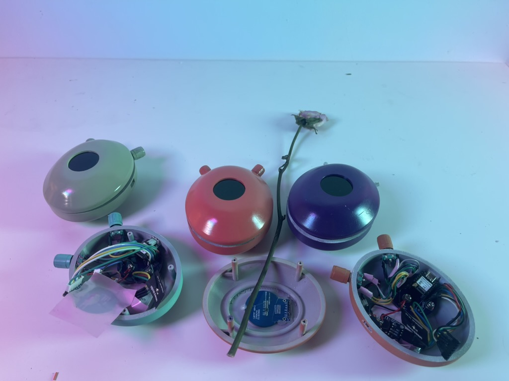
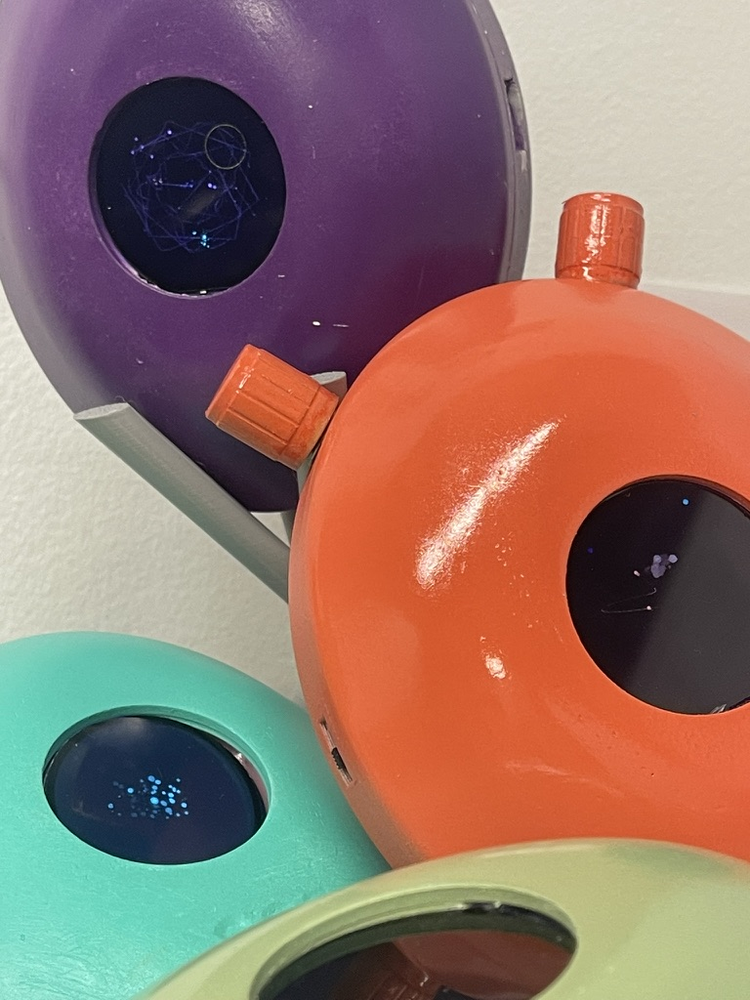
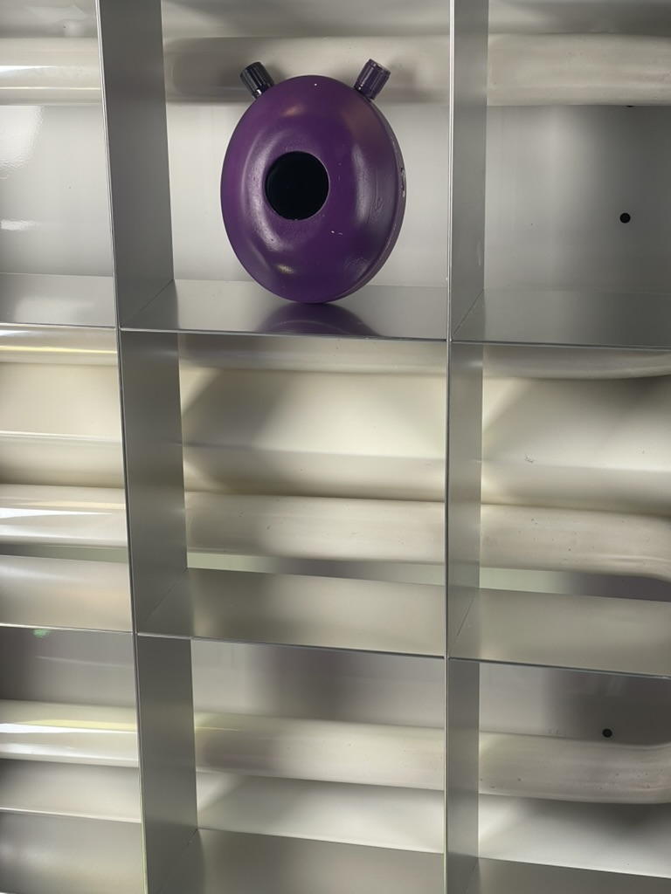
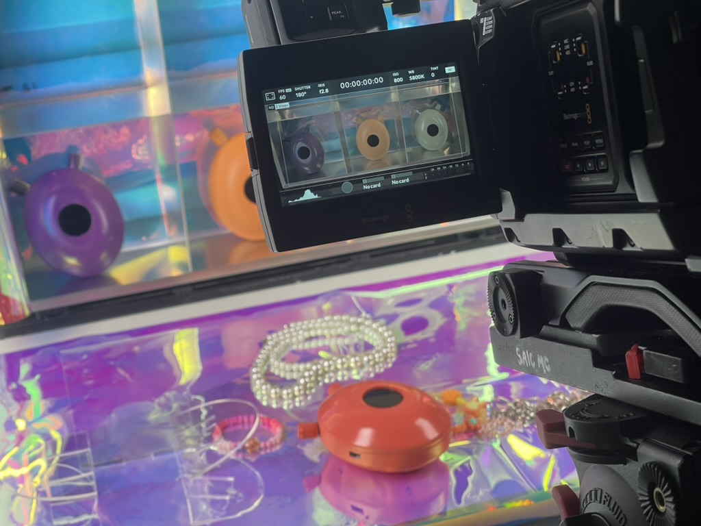
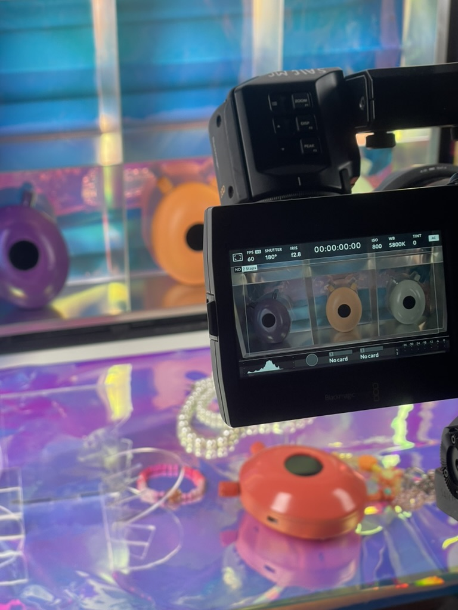

Funke
2026 · Interactive Object, Edition of 5
Funke is an interactive object, edition of 5 by Nickii Schamborski, 2026. Shown at Project Pathways (2026).





About the work
Funke is an edition of five off-grid mesh devices. Each unit sits on a self-designed 46 mm round PCB drawn in KiCad, carrying a Seeed XIAO ESP32-S3 and an SX1262 LoRa radio running RadioLib mesh firmware. Design direction by Helen Sungmin Lee.
Zur Arbeit
Funke ist eine Auflage von fünf netzunabhängigen Mesh-Geräten. Jedes Gerät sitzt auf einer selbst gezeichneten, 46 mm großen runden Platine aus KiCad mit einem Seeed XIAO ESP32-S3 und einem SX1262 LoRa-Funkmodul, das RadioLib-Mesh-Firmware ausführt. Design Direction: Helen Sungmin Lee.
Details
- Year
- 2026
- Type
- Interactive Object, Edition of 5
- Specs
- Custom 46 mm round PCB (KiCad), Seeed XIAO ESP32-S3, SX1262 LoRa, RadioLib mesh firmware; edition of five
- Institution / place
- School of the Art Institute of Chicago
- Collaborators
- Helen Sungmin Lee (Design Direction)
Shown at
- Project Pathways, Grain Management, Park Hyatt Chicago (2026)